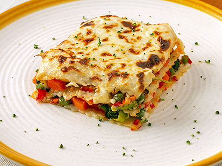

Receta para 4 personas
|
 |
Elaboración
- Lavamos los champiñones y los secamos bien. Troceamos y salteamos en una sartén con un poco de aceite de oliva virgen extra. En cuanto empiecen a cambiar de color, salpimentamos, añadimos las espinacas y tapamos. Dejamos que se cuezan ambos ingredientes con el calor residual.
- Lavamos bien las zanahorias y el brócoli. Cortamos la zanahoria en pequeños dados y picamos el brócoli (tronco incluido). Calentamos un poco de aceite de oliva virgen extra en una sartén y rehogamos ambas verduras juntas a fuego suave, salpimentadas al gusto, hasta que estén al dente.
- Pelamos y picamos la cebolla. Lavamos la berenjena y cortamos en pequeños dados. Calentamos un poco de aceite de oliva virgen extra en una sartén y rehogamos ambas verduras (salpimentadas al gusto) al mismo tiempo, a fuego suave, hasta que estén bien tiernas y cocidas.
- Cubrimos la base de una fuente de horno rectangular con un par de cucharadas de salsa de tomate y un poco de salsa bechamel. Colocamos encima dos láminas de pasta. Sobre ellas una capa del relleno de champiñones y espinacas y un poco de salsa (bechamel o tomate, al gusto). Cubrimos con otras dos láminas de pasta, una capa de del relleno de zanahoria y brócoli y un poco más de salsa. Terminamos con otra capa de pasta, el último relleno, más salsa y una última capa de pasta.
- Esparcimos el resto de la salsa bechamel por toda la superficie, dejando que escurra por los lados, y espolvoreamos con el Parmesano rallado. Cocemos en el horno, precalentado a 200º C, durante unos 20 minutos o hasta que la superficie esté ligeramente dorada. Servimos inmediatamente.